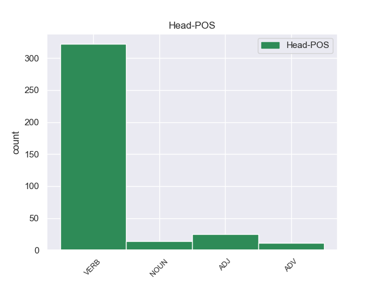
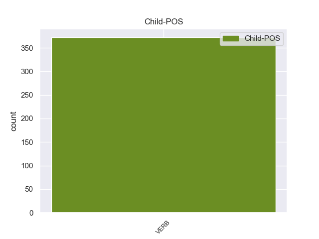

Distribution of features within this leaf



non-conforming Examples:
1 secondo _ _ _ _ 0 _ _ _
2 indiscrezioni _ _ _ _ 0 _ _ _
3 avrebbe _ _ _ _ 0 _ _ _
4 sostenuto sostenere VERB V Gender=Masc|Number=Sing|Tense=Past|VerbForm=Part 0 _ _ _
5 davanti _ _ _ _ 0 _ _ _
6 a _ _ _ _ 0 _ _ _
7 gli _ _ _ _ 0 _ _ _
8 investigatori _ _ _ _ 0 _ _ _
9 che _ _ _ _ 0 _ _ _
10 non _ _ _ _ 0 _ _ _
11 intendeva intendere VERB V Mood=Ind|Number=Sing|Person=3|Tense=Imp|VerbForm=Fin 4 ccomp 4:ccomp _
12 fare _ _ _ _ 0 _ _ _
13 nulla _ _ _ _ 0 _ _ _
14 di _ _ _ _ 0 _ _ _
15 male _ _ _ _ 0 _ _ _
16 e _ _ _ _ 0 _ _ _
17 che _ _ _ _ 0 _ _ _
18 per _ _ _ _ 0 _ _ _
19 lui _ _ _ _ 0 _ _ _
20 si _ _ _ _ 0 _ _ _
21 è _ _ _ _ 0 _ _ _
22 trattato _ _ _ _ 0 _ _ _
23 di _ _ _ _ 0 _ _ _
24 un _ _ _ _ 0 _ _ _
25 " _ _ _ _ 0 _ _ _
26 gioco _ _ _ _ 0 _ _ _
27 " _ _ _ _ 0 _ _ _
28 . _ _ _ _ 0 _ _ _
1 Per _ _ _ _ 0 _ _ _
2 questo _ _ _ _ 0 _ _ _
3 sono _ _ _ _ 0 _ _ _
4 invidiosi _ _ _ _ 0 _ _ _
5 quando _ _ _ _ 0 _ _ _
6 vedono vedere VERB V Mood=Ind|Number=Plur|Person=3|Tense=Pres|VerbForm=Fin 0 _ _ _
7 che _ _ _ _ 0 _ _ _
8 qualcuno _ _ _ _ 0 _ _ _
9 , _ _ _ _ 0 _ _ _
10 che _ _ _ _ 0 _ _ _
11 si _ _ _ _ 0 _ _ _
12 trovava _ _ _ _ 0 _ _ _
13 a _ _ _ _ 0 _ _ _
14 il _ _ _ _ 0 _ _ _
15 loro _ _ _ _ 0 _ _ _
16 stesso _ _ _ _ 0 _ _ _
17 livello _ _ _ _ 0 _ _ _
18 , _ _ _ _ 0 _ _ _
19 li _ _ _ _ 0 _ _ _
20 supera superare VERB V Mood=Ind|Number=Sing|Person=3|Tense=Pres|VerbForm=Fin 6 ccomp 6:ccomp SpaceAfter=No
21 . _ _ _ _ 0 _ _ _
1 In _ _ _ _ 0 _ _ _
2 ogni _ _ _ _ 0 _ _ _
3 caso caso NOUN S Gender=Masc|Number=Sing 0 _ _ _
4 che _ _ _ _ 0 _ _ _
5 sua _ _ _ _ 0 _ _ _
6 figlia _ _ _ _ 0 _ _ _
7 dipingeva dipingere VERB V Mood=Ind|Number=Sing|Person=3|Tense=Imp|VerbForm=Fin 3 ccomp 3:ccomp _
8 molto _ _ _ _ 0 _ _ _
9 meglio _ _ _ _ 0 _ _ _
10 . _ _ _ _ 0 _ _ _
1 Anche _ _ _ _ 0 _ _ _
2 in _ _ _ _ 0 _ _ _
3 le _ _ _ _ 0 _ _ _
4 organizzazioni _ _ _ _ 0 _ _ _
5 , _ _ _ _ 0 _ _ _
6 spesso _ _ _ _ 0 _ _ _
7 , _ _ _ _ 0 _ _ _
8 i _ _ _ _ 0 _ _ _
9 collaboratori _ _ _ _ 0 _ _ _
10 di _ _ _ _ 0 _ _ _
11 un _ _ _ _ 0 _ _ _
12 grande _ _ _ _ 0 _ _ _
13 imprenditore _ _ _ _ 0 _ _ _
14 sono _ _ _ _ 0 _ _ _
15 convinti convinto ADJ A Gender=Masc|Number=Plur 0 _ _ _
16 che _ _ _ _ 0 _ _ _
17 saprebbero sapere VERB V Mood=Cnd|Number=Plur|Person=3|Tense=Pres|VerbForm=Fin 15 ccomp 15:ccomp _
18 fare _ _ _ _ 0 _ _ _
19 meglio _ _ _ _ 0 _ _ _
20 di _ _ _ _ 0 _ _ _
21 lui _ _ _ _ 0 _ _ _
22 . _ _ _ _ 0 _ _ _
1 " _ _ _ _ 0 _ _ _
2 Sembra sembrare VERB V Mood=Ind|Number=Sing|Person=3|Tense=Pres|VerbForm=Fin 0 _ _ _
3 quasi _ _ _ _ 0 _ _ _
4 che _ _ _ _ 0 _ _ _
5 Wojtyla _ _ _ _ 0 _ _ _
6 cerchi cercare VERB V Mood=Sub|Number=Sing|Person=3|Tense=Pres|VerbForm=Fin 2 ccomp 2:ccomp _
7 di _ _ _ _ 0 _ _ _
8 " _ _ _ _ 0 _ _ _
9 metter _ _ _ _ 0 _ _ _
10 si _ _ _ _ 0 _ _ _
11 in _ _ _ _ 0 _ _ _
12 linea _ _ _ _ 0 _ _ _
13 " _ _ _ _ 0 _ _ _
14 in _ _ _ _ 0 _ _ _
15 vista _ _ _ _ 0 _ _ _
16 di _ _ _ _ 0 _ _ _
17 la _ _ _ _ 0 _ _ _
18 conferenza _ _ _ _ 0 _ _ _
19 di _ _ _ _ 0 _ _ _
20 Pechino _ _ _ _ 0 _ _ _
21 , _ _ _ _ 0 _ _ _
22 afferma _ _ _ _ 0 _ _ _
23 , _ _ _ _ 0 _ _ _
24 e _ _ _ _ 0 _ _ _
25 dopo _ _ _ _ 0 _ _ _
26 esser _ _ _ _ 0 _ _ _
27 si _ _ _ _ 0 _ _ _
28 battuto _ _ _ _ 0 _ _ _
29 una _ _ _ _ 0 _ _ _
30 mano _ _ _ _ 0 _ _ _
31 su _ _ _ _ 0 _ _ _
32 la _ _ _ _ 0 _ _ _
33 fronte _ _ _ _ 0 _ _ _
34 si _ _ _ _ 0 _ _ _
35 ricordi _ _ _ _ 0 _ _ _
36 a _ _ _ _ 0 _ _ _
37 l' _ _ _ _ 0 _ _ _
38 improvviso _ _ _ _ 0 _ _ _
39 di _ _ _ _ 0 _ _ _
40 l' _ _ _ _ 0 _ _ _
41 esistenza _ _ _ _ 0 _ _ _
42 di _ _ _ _ 0 _ _ _
43 un _ _ _ _ 0 _ _ _
44 problema _ _ _ _ 0 _ _ _
45 " _ _ _ _ 0 _ _ _
46 . _ _ _ _ 0 _ _ _